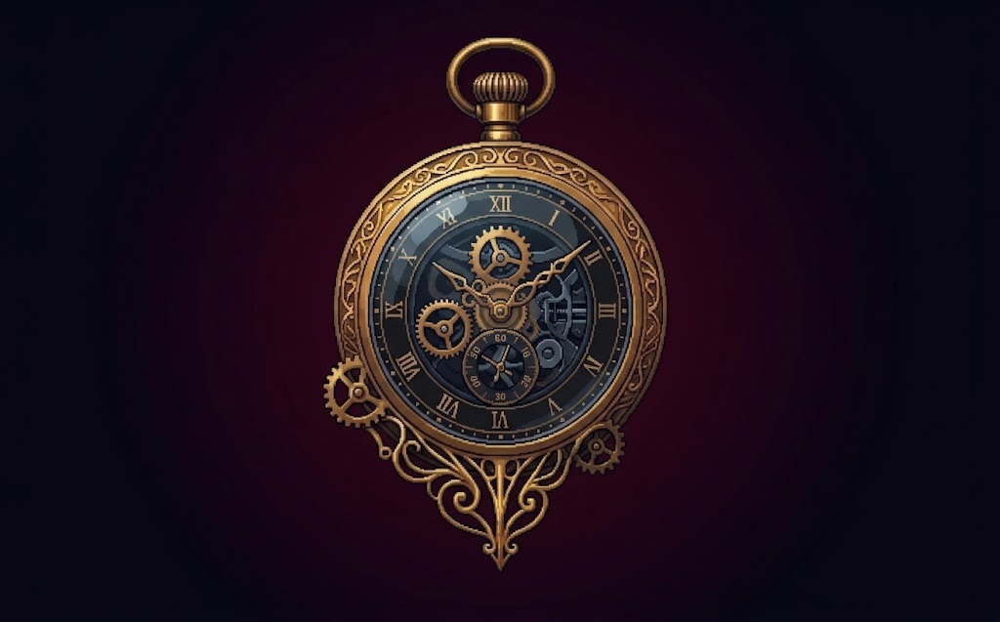

Artefato Lendário
Meridiano Zero
Lendário · Artefato temporal
Relógio de bolso com três mecanismos concêntricos que desafiam a relojoaria convencional. Ancora Auros em um ponto do tempo e permite pequenas alterações na realidade.
“Enquanto houver um ponteiro, ainda existe uma escolha.”